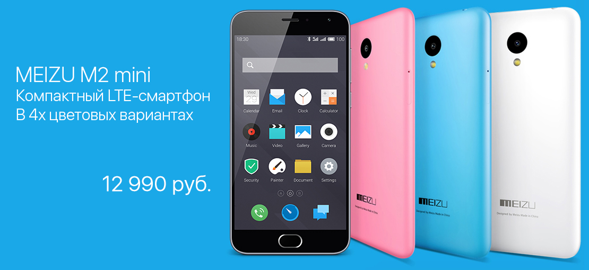
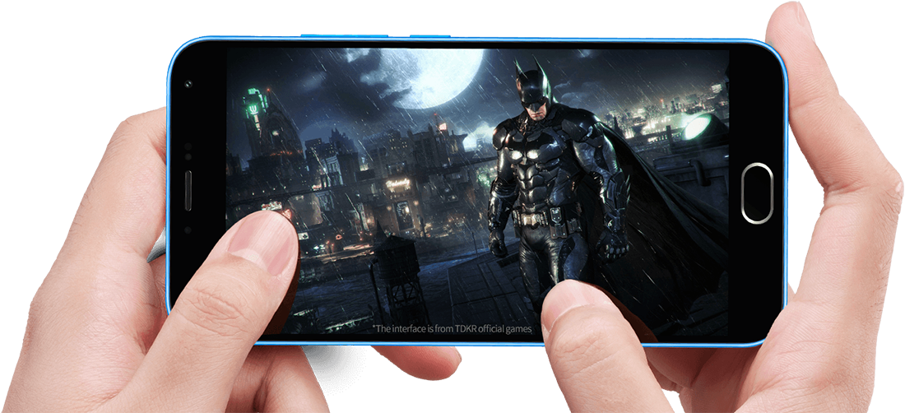
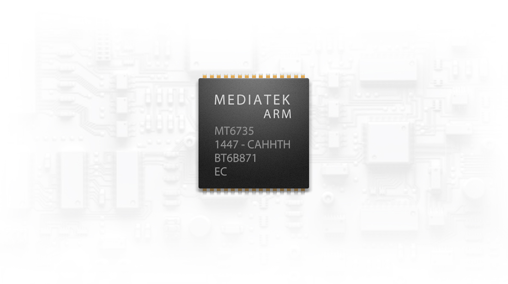
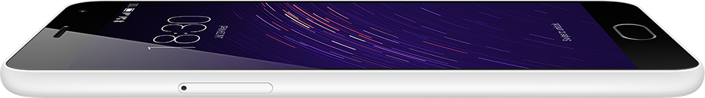

8-499-674-70-08
|
|
|
|
|
|
8-495-287-60-29 8-499-674-70-08 |
| Pro 6 | M2 mini | MX5 | |||
|  | |||||
| 2Гб оперативной памяти • Высокоскоростная флэш-память Samsung EMMC 5.0 | |||||
| Идеальная комбинация 2ГБ оперативной памяти и 16Гб высокоскоростной флэш-памяти EMMC 5.0 от Samsung просто не имеет аналогов в этой ценовой категории! Вы никогда не будете беспокоиться о нехватке оперативной памяти. С минимумом предустановленных приложений, большой внутренней памятью и системой Android 5.1, MEIZU M2 mini предлагает такой же высокоскоростной уровень работы, что и более дорогие смартфоны других компаний. | |||||
|  | |||||
| 4-ядерный 64-битный процессор 1,3ГГц с архитектурой A53 и процессом HPM | |||||
| Четырёхъядерный процессор Cortex-A53 имеет тактовую частоту 1,3ГГц, что делает MEIZU M2 mini быстрым, как молния. MediaTek CorePilot™ - это высокоэффективная мульти-процессорная технология, которая позволяет центральному и графическому процессорам работать вместе, слаженно и эффективно. 64-битный процессор оптимально подходит для полностью новой Flyme OS 4.5 на основе Android 5.1, что в целом обеспечивает пользователю отличный опыт эксплуатации. | |||||
|  | |||||
| Компактный и лёгкий • Монолитный дизайн | |||||
| MEIZU M2 mini следует характерному стилю дизайна, уже представленному в MEIZU M2 NOTE. Но это первый случай, когда изысканный двухслотовый лоток SIM и монолитный дизайн корпуса предлагаются в данном ценовом сегменте. Кроме того, MEIZU M2 mini отлично подходит для использования одной рукой, удачно сочетая в себе компактный лёгкий корпус весом всего в 131 грамм и шикарный 5-дюймовый экран. | |||||
|  | |||||
| | Сотрудничество | Оплата | Гарантия | Контакты | | |||||
| COPYRIGHT © 2016 MEIZU Technology Co., Ltd. Все права защищены. |
|
||||